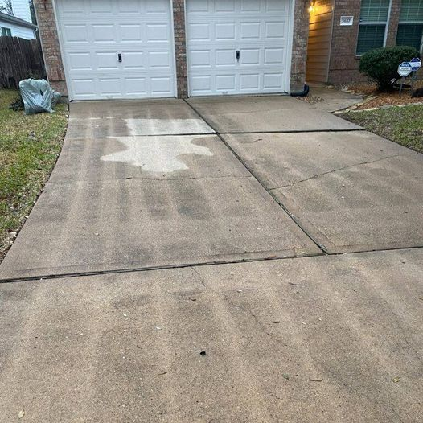

Lines appearing on your driveway after pressure washing could be due to a few reasons:
- Uneven Pressure: Inconsistent pressure application while washing can leave behind >lines or streaks. Ensure you maintain a consistent distance and pressure throughout the cleaning process.
- Improper Technique: Incorrect nozzle angle or distance from the surface can result in lines. Could you hold the nozzle at a consistent angle and maintain the
- Dirt Build-Up: If there are areas of heavier dirt or grime accumulation, they may require more pressure to clean thoroughly, potentially leaving lines when adjacent areas are cleaned at a different pressure.
- Equipment Issues: Malfunctioning or damaged pressure washer equipment can cause irregular pressure output, leading to lines or streaks on the driveway.